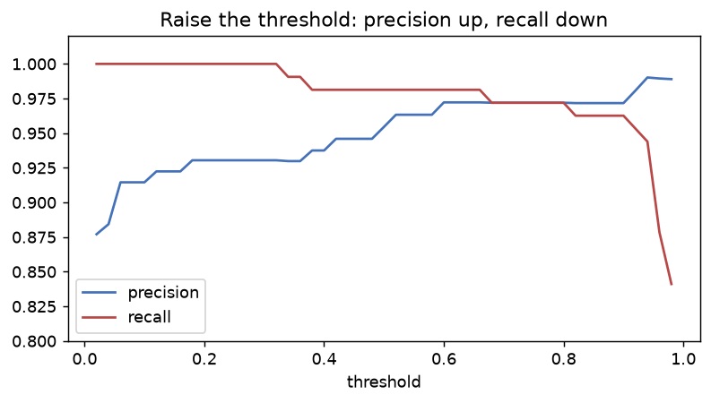

📥 Python 練習ノートブック：ml670_py_practice.ipynb — このページはノートブックの T6の解説です。Jupyter で開いて、同じ名前のセクションを解いてください（自動チェック ✅/❌ 付き）。
①
説明する：何のため？
3文で言えるようにする
分類モデルの評価は「正解率」だけでは足りません。たとえば陽性が 3% しかないデータで「全部陰性」と答えると、正解率は 97% です。でも陽性は 1 件も見つけていません。
| 予測：陽性 | 予測：陰性 | |
|---|---|---|
| 実際：陽性 | TP（正しく陽性） | FN（見逃し） |
| 実際：陰性 | FP（誤報） | TN（正しく陰性） |
precision ＝ TP ÷ (TP+FP)、recall ＝ TP ÷ (TP+FN)。病気の見逃しを避けたいなら recall、迷惑メール判定で普通のメールを消したくないなら precision を重視します。
📝 3文のお手本
precision は陽性と予測した中の的中率で、recall は本当の陽性のうち見つけられた割合。病気の見逃しを避けたいときは recall を重視する。陽性が少ないデータでは、全部陰性と答えても正解率が高くなるので、正解率だけでは判断できない。
②
手で計算する
小さなデータを紙と電卓で
TP = 8、FP = 2、FN = 4、TN = 86（合計 100 件）で計算します。
| 指標 | 計算 | 結果 |
|---|---|---|
| precision | 8 ÷ (8+2) | 0.8 |
| recall | 8 ÷ (8+4) | 0.667 |
| accuracy | (8+86) ÷ 100 | 0.94 |
| F1 | 2×0.8×0.667 ÷ (0.8+0.667) | 0.727 |
TP, FP, FN, TN = 8, 2, 4, 86 prec, rec = TP / (TP + FP), TP / (TP + FN) print(prec, round(rec, 3), (TP + TN) / 100, round(2 * prec * rec / (prec + rec), 3))
0.8 0.667 0.94 0.727
不均衡データの罠：1000 件のうち陽性 30 件で、全部陰性と答えると…
print('正解率', 970 / 1000, ' recall', 0 / 30)
正解率 0.97 recall 0.0
③
自分で作る
NumPy で書いて、scikit-learn と一致させる
confusion で 4 つを数え、precision・recall・sweep（しきい値ごとの値）を作ります。乳がんデータ（1 = 良性 を陽性とする）のロジスティック回帰で確かめます。
def confusion(y_true, y_pred): y_true, y_pred = np.asarray(y_true), np.asarray(y_pred) tp = int(np.sum((y_true == 1) & (y_pred == 1))) fp = int(np.sum((y_true == 0) & (y_pred == 1))) fn = int(np.sum((y_true == 1) & (y_pred == 0))) tn = int(np.sum((y_true == 0) & (y_pred == 0))) return tn, fp, fn, tp def precision(y_true, y_pred): tn, fp, fn, tp = confusion(y_true, y_pred) return tp / (tp + fp) if tp + fp else 0.0 def recall(y_true, y_pred): tn, fp, fn, tp = confusion(y_true, y_pred) return tp / (tp + fn) if tp + fn else 0.0 def sweep(y_true, proba, thresholds): out = [] for t in thresholds: pred = (np.asarray(proba) >= t).astype(int) out.append((t, precision(y_true, pred), recall(y_true, pred))) return out
pred = (proba >= 0.5).astype(int) print('自作 :', confusion(yc_te, pred), ' (TN, FP, FN, TP)') print('sklearn:', tuple(confusion_matrix(yc_te, pred).ravel())) print('precision 自作:', round(precision(yc_te, pred), 4), ' sklearn:', round(precision_score(yc_te, pred), 4)) print('recall 自作:', round(recall(yc_te, pred), 4), ' sklearn:', round(recall_score(yc_te, pred), 4))
自作 : (59, 5, 2, 105) (TN, FP, FN, TP)
sklearn: (np.int64(59), np.int64(5), np.int64(2), np.int64(105))
precision 自作: 0.9545 sklearn: 0.9545
recall 自作: 0.9813 sklearn: 0.9813
しきい値を動かす
for t, p, r in sweep(yc_te, proba, [0.1, 0.3, 0.5, 0.7, 0.9]): print(f'threshold {t}: precision {p:.3f} recall {r:.3f}')
threshold 0.1: precision 0.915 recall 1.000
threshold 0.3: precision 0.930 recall 1.000
threshold 0.5: precision 0.955 recall 0.981
threshold 0.7: precision 0.972 recall 0.972
threshold 0.9: precision 0.972 recall 0.963
import matplotlib.pyplot as plt th = np.linspace(0.02, 0.98, 49) res = sweep(yc_te, proba, th) fig, ax = plt.subplots(figsize=(7, 3.4)) ax.plot(th, [p for _, p, _ in res], color='#4471B8', label='precision') ax.plot(th, [r for _, _, r in res], color='#B84848', label='recall') ax.set_xlabel('threshold'); ax.set_ylim(0.8, 1.02); ax.legend(); ax.set_title('Raise the threshold: precision up, recall down')

しきい値を上げると precision は上がり、recall は下がる（シーソー）。
しきい値を下げると、少しでも怪しいものを陽性と言うので recall が上がり（見逃しが減る）、代わりに precision が下がります（誤報が増える）。
④
白紙で再現する・よくある間違い
次の日に、見ずにもう一度
④ 次の日にやること：ノートブックの「④ 白紙で再現」で、名前の後ろに
_2 が付いた関数を、③を見ずに書き直します。10分以内に ✅ が揃えば合格です。confusion_2・precision_2・recall_2・sweep_2⚠️ よくある間違い
- 正解率（accuracy）だけで「良いモデル」と判断する（不均衡データで騙される）
confusion_matrixの並び順（[[TN, FP], [FN, TP]]）を取り違える- precision と recall の分母を入れ替える
- しきい値を 0.5 から動かせると知らない
❓ 確認：がんの検査で、見逃したくない。しきい値は上げる？下げる？
下げる。recall が上がり見逃しが減る。誤報（precision の低下）は受け入れる。
❓ 確認：TP=8・FP=2・FN=4 のとき、precision と recall は？
precision = 8/10 = 0.8、recall = 8/12 ≈ 0.667。